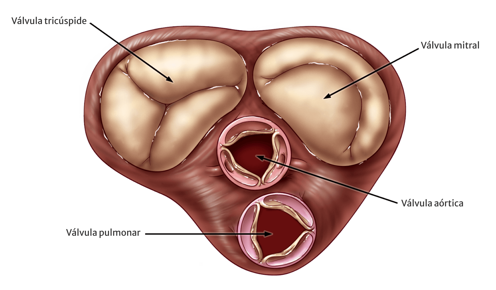
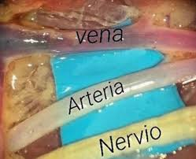
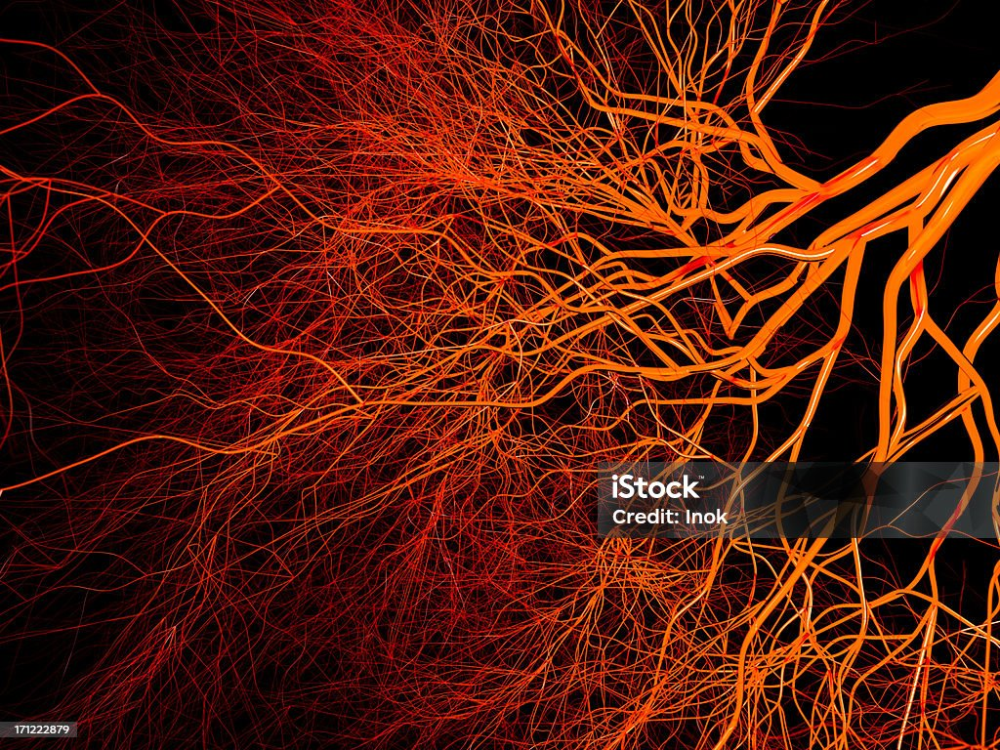
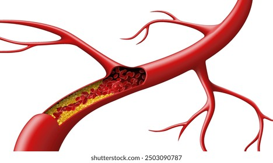
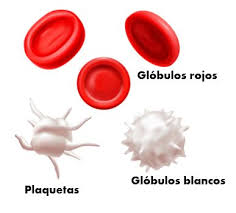
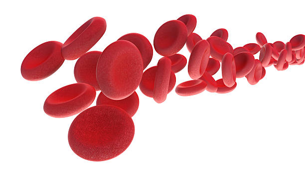
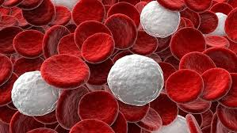
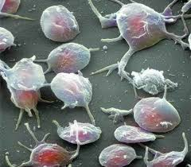

<!DOCTYPE html>
<html lang="ca">
<head>
    <meta charset="UTF-8">
    <meta name="viewport" content="width=device-width, initial-scale=1.0">
    <title>El Transport de Substàncies al Cos Humà</title>
    <style>
        @import url('https://fonts.googleapis.com/css2?family=Montserrat:wght@300;400;600;700;900&display=swap');

        * {
            margin: 0;
            padding: 0;
            box-sizing: border-box;
        }

        body {
            font-family: 'Montserrat', sans-serif;
            overflow: hidden;
            background: #0a0a0a;
            height: 100vh;
            cursor: pointer;
        }

        .presentation-container {
            width: 100%;
            height: 100vh;
            position: relative;
        }

        .slide {
            width: 100%;
            height: 100vh;
            position: absolute;
            top: 0;
            left: 0;
            display: none;
            opacity: 0;
            overflow: hidden;
        }

        .slide.active {
            display: block;
        }

        /* Transicions variades - s'aplicaran de forma alterna */
        .slide.active.transition-fade {
            animation: fadeIn 1s cubic-bezier(0.4, 0, 0.2, 1) forwards;
        }

        .slide.active.transition-slide-left {
            animation: slideFromLeft 0.9s cubic-bezier(0.34, 1.56, 0.64, 1) forwards;
        }

        .slide.active.transition-slide-right {
            animation: slideFromRight 0.9s cubic-bezier(0.34, 1.56, 0.64, 1) forwards;
        }

        .slide.active.transition-slide-up {
            animation: slideFromBottom 0.9s cubic-bezier(0.34, 1.56, 0.64, 1) forwards;
        }

        .slide.active.transition-zoom {
            animation: zoomIn 1s cubic-bezier(0.25, 0.46, 0.45, 0.94) forwards;
        }

        .slide.active.transition-rotate {
            animation: rotateIn 1.1s cubic-bezier(0.68, -0.55, 0.265, 1.55) forwards;
        }

        .slide.active.transition-flip {
            animation: flipIn 1s cubic-bezier(0.68, -0.55, 0.265, 1.55) forwards;
        }

        .slide.active.transition-expand {
            animation: expandIn 0.9s cubic-bezier(0.25, 0.46, 0.45, 0.94) forwards;
        }

        .slide.active.transition-blur {
            animation: blurIn 1s ease forwards;
        }

        .slide.active.transition-bounce {
            animation: bounceIn 1.2s cubic-bezier(0.68, -0.55, 0.265, 1.55) forwards;
        }

        /* Animacions d'entrada */
        @keyframes fadeIn {
            from {
                opacity: 0;
            }
            to {
                opacity: 1;
            }
        }

        @keyframes slideFromLeft {
            from {
                opacity: 0;
                transform: translateX(-100%) scale(0.9);
            }
            to {
                opacity: 1;
                transform: translateX(0) scale(1);
            }
        }

        @keyframes slideFromRight {
            from {
                opacity: 0;
                transform: translateX(100%) scale(0.9);
            }
            to {
                opacity: 1;
                transform: translateX(0) scale(1);
            }
        }

        @keyframes slideFromBottom {
            from {
                opacity: 0;
                transform: translateY(100%) scale(0.95);
            }
            to {
                opacity: 1;
                transform: translateY(0) scale(1);
            }
        }

        @keyframes zoomIn {
            from {
                opacity: 0;
                transform: scale(0.3);
            }
            to {
                opacity: 1;
                transform: scale(1);
            }
        }

        @keyframes rotateIn {
            from {
                opacity: 0;
                transform: rotate(-180deg) scale(0.5);
            }
            to {
                opacity: 1;
                transform: rotate(0deg) scale(1);
            }
        }

        @keyframes flipIn {
            from {
                opacity: 0;
                transform: perspective(1000px) rotateY(90deg);
            }
            to {
                opacity: 1;
                transform: perspective(1000px) rotateY(0deg);
            }
        }

        @keyframes expandIn {
            from {
                opacity: 0;
                transform: scale(0.1) rotate(45deg);
            }
            to {
                opacity: 1;
                transform: scale(1) rotate(0deg);
            }
        }

        @keyframes blurIn {
            from {
                opacity: 0;
                filter: blur(20px);
            }
            to {
                opacity: 1;
                filter: blur(0);
            }
        }

        @keyframes bounceIn {
            0% {
                opacity: 0;
                transform: scale(0.3) translateY(-100px);
            }
            50% {
                transform: scale(1.05) translateY(10px);
            }
            70% {
                transform: scale(0.95) translateY(-5px);
            }
            100% {
                opacity: 1;
                transform: scale(1) translateY(0);
            }
        }

        .slide.exit {
            animation: fadeOut 0.5s ease forwards;
        }

        @keyframes fadeOut {
            from {
                opacity: 1;
            }
            to {
                opacity: 0;
            }
        }

        .slide-bg {
            position: absolute;
            width: 100%;
            height: 100%;
            z-index: 0;
            background-size: 180% 180%;
            animation: slowDrift 20s ease-in-out infinite;
            transform: translateZ(0);
            transition: transform 0.35s ease;
        }

        @keyframes slowDrift {
            0% { background-position: 0% 50%; }
            50% { background-position: 100% 50%; }
            100% { background-position: 0% 50%; }
        }

        /* Gradients variats */
        .bg-red-blue {
            background: linear-gradient(135deg, #8B0000 0%, #1e1e3f 100%);
        }

        .bg-blue-red {
            background: linear-gradient(135deg, #1e1e3f 0%, #8B0000 100%);
        }

        .bg-green-dark {
            background: linear-gradient(135deg, #0a4d2e 0%, #0a0a0a 100%);
        }

        .bg-purple-dark {
            background: linear-gradient(135deg, #4a0080 0%, #1a0033 100%);
        }

        .bg-orange-dark {
            background: linear-gradient(135deg, #cc4400 0%, #0a0a0a 100%);
        }

        .bg-cyan-dark {
            background: linear-gradient(135deg, #006b7d 0%, #0a0a0a 100%);
        }

        .bg-yellow-dark {
            background: linear-gradient(135deg, #b8860b 0%, #0a0a0a 100%);
        }

        .bg-teal-dark {
            background: linear-gradient(135deg, #00695c 0%, #0a0a0a 100%);
        }

        .bg-magenta-dark {
            background: linear-gradient(135deg, #880e4f 0%, #0a0a0a 100%);
        }

        .bg-indigo-dark {
            background: linear-gradient(135deg, #1a237e 0%, #0a0a0a 100%);
        }

        .bg-split-rg {
            background: linear-gradient(90deg, #8B0000 0%, #8B0000 50%, #0a4d2e 50%, #0a4d2e 100%);
        }

        .bg-split-bp {
            background: linear-gradient(90deg, #1e1e3f 0%, #1e1e3f 50%, #4a0080 50%, #4a0080 100%);
        }

        /* Nous gradients més creatius */
        .bg-radial-burst {
            background: radial-gradient(circle at 30% 40%, #DC143C 0%, #1e1e3f 50%, #0a0a0a 100%);
        }

        .bg-diagonal-wave {
            background: linear-gradient(45deg, #8B0000 0%, #4a0080 33%, #006b7d 66%, #0a4d2e 100%);
        }

        .bg-mesh {
            background:
                radial-gradient(at 20% 30%, rgba(220, 20, 60, 0.3) 0px, transparent 50%),
                radial-gradient(at 80% 70%, rgba(30, 30, 63, 0.3) 0px, transparent 50%),
                radial-gradient(at 50% 50%, rgba(138, 43, 226, 0.2) 0px, transparent 50%),
                #0a0a0a;
        }

        .bg-aurora {
            background: linear-gradient(124deg, #ff2400, #e81d1d, #e8b71d, #e3e81d, #1de840, #1ddde8, #2b1de8, #dd00f3, #dd00f3);
            background-size: 1800% 1800%;
            animation: aurora 18s ease infinite;
        }

        @keyframes aurora {
            0%{background-position:0% 82%}
            50%{background-position:100% 19%}
            100%{background-position:0% 82%}
        }

        /* Efecte glassmorphism per fons moderns */
        .bg-glass {
            background: rgba(255, 255, 255, 0.02);
            backdrop-filter: blur(10px);
            border: 1px solid rgba(255, 255, 255, 0.1);
        }

        .slide-content {
            position: relative;
            z-index: 1;
            width: 100%;
            height: 100%;
            display: flex;
            flex-direction: column;
            justify-content: center;
            align-items: center;
            padding: clamp(32px, 4vw, 80px);
        }

        .mechanic-layer {
            position: absolute;
            inset: 0;
            pointer-events: none;
            overflow: hidden;
            z-index: 0;
        }

        .bubble-layer span {
            position: absolute;
            width: 18px;
            height: 18px;
            border-radius: 50%;
            background: rgba(255, 255, 255, 0.12);
            animation: floatBubble 12s linear infinite;
            filter: blur(0.5px);
        }

        @keyframes floatBubble {
            0% { transform: translateY(100vh) scale(0.6); opacity: 0; }
            10% { opacity: 0.8; }
            100% { transform: translateY(-10vh) scale(1.5); opacity: 0; }
        }

        .grid-layer {
            background: linear-gradient(rgba(255,255,255,0.06) 1px, transparent 1px),
                        linear-gradient(90deg, rgba(255,255,255,0.06) 1px, transparent 1px);
            background-size: 120px 120px;
            animation: gridDrift 16s linear infinite;
            mix-blend-mode: screen;
            opacity: 0.4;
        }

        @keyframes gridDrift {
            from { background-position: 0 0, 0 0; }
            to { background-position: -200px -200px, 200px 200px; }
        }

        .spotlight-layer {
            background: radial-gradient(circle at var(--mx, 50%) var(--my, 50%), rgba(255,255,255,0.15), transparent 55%);
            transition: background-position 0.15s ease;
            mix-blend-mode: screen;
        }

        .orbit-layer {
            display: grid;
            place-items: center;
        }

        .orbit-layer .orbit-dot {
            width: 12px;
            height: 12px;
            border-radius: 50%;
            background: rgba(255, 215, 0, 0.8);
            position: absolute;
            animation: orbit 12s linear infinite;
            box-shadow: 0 0 25px rgba(255, 215, 0, 0.6);
        }

        @keyframes orbit {
            from { transform: rotate(0deg) translateX(130px) rotate(0deg); }
            to { transform: rotate(360deg) translateX(130px) rotate(-360deg); }
        }

        .wave-layer {
            background: radial-gradient(circle at 20% 20%, rgba(255, 255, 255, 0.08) 0, transparent 30%),
                        radial-gradient(circle at 80% 80%, rgba(255, 255, 255, 0.08) 0, transparent 25%);
            animation: waveMove 14s ease-in-out infinite;
        }

        @keyframes waveMove {
            0%, 100% { transform: scale(1) translate(0,0); }
            50% { transform: scale(1.1) translate(10px, -10px); }
        }

        .ray-layer {
            background: repeating-linear-gradient(
                90deg,
                hsla(50, 90%, 65%, 0.1) 0,
                hsla(50, 90%, 65%, 0.1) 2px,
                transparent 2px,
                transparent 16px
            );
            animation: raySweep var(--speed, 14s) linear infinite;
            mix-blend-mode: screen;
            filter: hue-rotate(var(--hue, 0deg));
        }

        @keyframes raySweep {
            from { background-position: 0 0; }
            to { background-position: 400px 0; }
        }

        .ring-layer {
            display: grid;
            place-items: center;
        }

        .ring-layer span {
            position: absolute;
            width: 240px;
            height: 240px;
            border-radius: 50%;
            border: 2px solid rgba(255,255,255,0.2);
            animation: ringPulse 6s ease-in-out infinite;
            opacity: 0.6;
        }

        @keyframes ringPulse {
            0% { transform: scale(0.4); opacity: 0; }
            25% { opacity: 0.45; }
            100% { transform: scale(1.7); opacity: 0; }
        }

        .dust-layer span {
            position: absolute;
            background: rgba(255,255,255,0.6);
            border-radius: 50%;
            animation: dustDrift 18s linear infinite;
            opacity: 0.8;
            box-shadow: 0 0 12px rgba(255,255,255,0.3);
        }

        @keyframes dustDrift {
            0% { transform: translateY(10vh) translateX(-10px); opacity: 0; }
            20% { opacity: 0.7; }
            100% { transform: translateY(-110vh) translateX(40px); opacity: 0; }
        }

        .scanner-layer::before {
            content: '';
            position: absolute;
            inset: 0;
            background: linear-gradient(180deg, transparent, rgba(255,255,255,0.2), transparent);
            animation: scan var(--speed, 18s) linear infinite;
            mix-blend-mode: screen;
        }

        @keyframes scan {
            from { transform: translateY(-100%); }
            to { transform: translateY(100%); }
        }

        .ribbon-layer {
            overflow: hidden;
        }

        .ribbon-layer span {
            position: absolute;
            left: -20%;
            width: 140%;
            height: 12px;
            background: linear-gradient(90deg, rgba(255,255,255,0.06), rgba(255,255,255,0.25), rgba(255,255,255,0.06));
            animation: ribbonSlide 10s linear infinite;
            transform: skewX(var(--skew, 0deg));
            filter: hue-rotate(var(--hue, 0deg));
        }

        @keyframes ribbonSlide {
            from { transform: translateX(0) skewX(var(--skew, 0deg)); }
            to { transform: translateX(30%) skewX(var(--skew, 0deg)); }
        }

        .spark-layer span {
            position: absolute;
            background: radial-gradient(circle, #fff, rgba(255,255,255,0));
            border-radius: 50%;
            animation: sparkDrift 8s ease-in-out infinite;
            opacity: 0.8;
        }

        @keyframes sparkDrift {
            0% { transform: translate3d(0,0,0) scale(0.3); opacity: 0; }
            20% { opacity: 0.9; }
            50% { transform: translate3d(30px, -20px, 0) scale(1); }
            100% { transform: translate3d(-30px, -60px, 0) scale(0); opacity: 0; }
        }

        .typewriter-ribbon {
            position: fixed;
            left: 50%;
            bottom: 18px;
            transform: translateX(-50%);
            padding: 12px 18px;
            background: rgba(0,0,0,0.55);
            border: 1px solid rgba(255,255,255,0.1);
            border-radius: 14px;
            color: #f8f8f8;
            font-size: clamp(0.9rem, 1.2vw, 1.1rem);
            letter-spacing: 0.5px;
            box-shadow: 0 12px 30px rgba(0,0,0,0.35);
            z-index: 1200;
            min-width: 280px;
            text-align: center;
        }

        .parallax-slide .slide-bg {
            animation-duration: 26s;
        }

        .slide-content.parallax-content {
            transition: transform 0.25s ease;
        }

        /* Layouts creatius variats */
        .layout-circular {
            display: flex;
            flex-wrap: wrap;
            justify-content: center;
            align-items: center;
            gap: 30px;
            max-width: 1200px;
        }

        .layout-circular .circle-item {
            width: 380px;
            height: 380px;
            border-radius: 50%;
            background: rgba(255, 255, 255, 0.08);
            border: 4px solid #DC143C;
            display: flex;
            flex-direction: column;
            justify-content: center;
            align-items: center;
            padding: 50px;
            animation: floatCircle 3s ease-in-out infinite;
            transition: all 0.4s ease;
            box-shadow: 0 10px 40px rgba(0, 0, 0, 0.3);
        }

        .layout-circular .circle-item:nth-child(1) { animation-delay: 0s; }
        .layout-circular .circle-item:nth-child(2) { animation-delay: 0.5s; }
        .layout-circular .circle-item:nth-child(3) { animation-delay: 1s; }
        .layout-circular .circle-item:nth-child(4) { animation-delay: 1.5s; }

        @keyframes floatCircle {
            0%, 100% { transform: translateY(0px) scale(1); }
            50% { transform: translateY(-20px) scale(1.05); }
        }

        .layout-circular .circle-item:hover {
            transform: scale(1.15) !important;
            border-color: #FFD700;
            box-shadow: 0 0 50px rgba(220, 20, 60, 0.6);
        }

        /* Layout zigzag asimètric */
        .layout-zigzag {
            display: flex;
            flex-direction: column;
            gap: 40px;
            width: 100%;
            max-width: 1400px;
        }

        .layout-zigzag .zigzag-row {
            display: grid;
            grid-template-columns: 1fr 1fr;
            gap: 60px;
            align-items: center;
        }

        .layout-zigzag .zigzag-row:nth-child(even) {
            direction: rtl;
        }

        .layout-zigzag .zigzag-row:nth-child(even) > * {
            direction: ltr;
        }

        .layout-zigzag .zigzag-content {
            background: rgba(255, 255, 255, 0.08);
            padding: 50px;
            border-radius: 25px;
            border-left: 6px solid #DC143C;
            animation: slideZigzag 0.8s ease forwards;
            opacity: 0;
            box-shadow: 0 10px 35px rgba(0, 0, 0, 0.3);
            min-height: 220px;
        }

        @keyframes slideZigzag {
            from {
                opacity: 0;
                transform: translateX(-50px);
            }
            to {
                opacity: 1;
                transform: translateX(0);
            }
        }

        /* Layout de cards flotantes amb efecte 3D */
        .layout-cards {
            display: grid;
            grid-template-columns: repeat(auto-fit, minmax(380px, 1fr));
            gap: 50px;
            width: 100%;
            max-width: 1400px;
            perspective: 1000px;
        }

        .floating-card {
            background: linear-gradient(135deg, rgba(220, 20, 60, 0.15) 0%, rgba(30, 58, 138, 0.15) 100%);
            border: 3px solid rgba(220, 20, 60, 0.4);
            border-radius: 30px;
            padding: 50px;
            transform-style: preserve-3d;
            transition: all 0.5s ease;
            animation: cardFloat 4s ease-in-out infinite;
            min-height: 300px;
            box-shadow: 0 15px 50px rgba(0, 0, 0, 0.3);
        }

        .floating-card:nth-child(1) { animation-delay: 0s; }
        .floating-card:nth-child(2) { animation-delay: 0.7s; }
        .floating-card:nth-child(3) { animation-delay: 1.4s; }

        @keyframes cardFloat {
            0%, 100% {
                transform: translateY(0) rotateX(0deg) rotateY(0deg);
            }
            25% {
                transform: translateY(-15px) rotateX(5deg) rotateY(-3deg);
            }
            50% {
                transform: translateY(0) rotateX(0deg) rotateY(5deg);
            }
            75% {
                transform: translateY(-10px) rotateX(-3deg) rotateY(-5deg);
            }
        }

        .floating-card:hover {
            transform: translateY(-30px) rotateX(10deg) scale(1.05) !important;
            box-shadow: 0 30px 80px rgba(220, 20, 60, 0.4);
            border-color: #DC143C;
        }

        /* Layout asimètric modern */
        .layout-asymmetric {
            display: grid;
            grid-template-columns: 2fr 1fr;
            grid-template-rows: 1fr 1fr;
            gap: 30px;
            width: 100%;
            max-width: 1400px;
            height: 70vh;
        }

        .layout-asymmetric .asymmetric-main {
            grid-row: 1 / 3;
            background: rgba(220, 20, 60, 0.15);
            border-radius: 35px;
            padding: 60px;
            border: 4px solid #DC143C;
            animation: pulseGlow 2s ease-in-out infinite;
        }

        @keyframes pulseGlow {
            0%, 100% {
                box-shadow: 0 0 20px rgba(220, 20, 60, 0.3);
            }
            50% {
                box-shadow: 0 0 50px rgba(220, 20, 60, 0.7);
            }
        }

        .layout-asymmetric .asymmetric-side {
            background: rgba(30, 58, 138, 0.15);
            border-radius: 25px;
            padding: 40px;
            border: 3px solid rgba(30, 58, 138, 0.6);
            display: flex;
            flex-direction: column;
            justify-content: center;
            box-shadow: 0 8px 30px rgba(0, 0, 0, 0.3);
        }

        /* Layout amb formes geomètriques */
        .layout-geometric {
            position: relative;
            width: 100%;
            max-width: 1200px;
            height: 70vh;
        }

        .geometric-shape {
            position: absolute;
            background: rgba(220, 20, 60, 0.1);
            border: 3px solid #DC143C;
            padding: 30px;
            animation: shapeRotate 20s linear infinite;
        }

        @keyframes shapeRotate {
            0% { transform: rotate(0deg); }
            100% { transform: rotate(360deg); }
        }

        .geometric-shape.hexagon {
            width: 300px;
            height: 260px;
            clip-path: polygon(50% 0%, 100% 25%, 100% 75%, 50% 100%, 0% 75%, 0% 25%);
            top: 10%;
            left: 10%;
        }

        .geometric-shape.diamond {
            width: 250px;
            height: 250px;
            clip-path: polygon(50% 0%, 100% 50%, 50% 100%, 0% 50%);
            top: 40%;
            right: 15%;
        }

        .slide-title {
            font-size: clamp(2.4rem, 3vw + 1.4rem, 4.2rem);
            font-weight: 900;
            color: #ffffff;
            text-align: center;
            margin-bottom: 30px;
            text-transform: uppercase;
            letter-spacing: 4px;
            animation: titleReveal 1s ease forwards;
            text-shadow: 0 10px 40px rgba(0, 0, 0, 0.8);
            line-height: 1.1;
            max-width: min(95vw, 1200px);
            padding: 0 12px;
            word-break: break-word;
        }

        @keyframes titleReveal {
            from {
                opacity: 0;
                transform: translateY(-50px) scale(0.9);
            }
            to {
                opacity: 1;
                transform: translateY(0) scale(1);
            }
        }

        .slide-subtitle {
            font-size: clamp(1.2rem, 2vw + 0.8rem, 2rem);
            font-weight: 300;
            color: #e0e0e0;
            text-align: center;
            margin-bottom: 40px;
            animation: subtitleReveal 1s ease 0.3s forwards;
            opacity: 0;
            max-width: min(90vw, 1000px);
            line-height: 1.5;
        }

        @keyframes subtitleReveal {
            from {
                opacity: 0;
                transform: translateY(30px);
            }
            to {
                opacity: 1;
                transform: translateY(0);
            }
        }

        .elegant-list {
            list-style: none;
            padding: 0;
            max-width: 1100px;
            margin: 0 auto;
        }

        .elegant-list li {
            font-size: 1.5rem;
            color: #ffffff;
            margin-bottom: 20px;
            padding-left: 50px;
            position: relative;
            opacity: 0;
            animation: listItemAppear 0.6s ease forwards;
        }

        .elegant-list li:nth-child(1) { animation-delay: 0.4s; }
        .elegant-list li:nth-child(2) { animation-delay: 0.6s; }
        .elegant-list li:nth-child(3) { animation-delay: 0.8s; }
        .elegant-list li:nth-child(4) { animation-delay: 1s; }
        .elegant-list li:nth-child(5) { animation-delay: 1.2s; }
        .elegant-list li:nth-child(6) { animation-delay: 1.4s; }

        @keyframes listItemAppear {
            from {
                opacity: 0;
                transform: translateX(-100px);
            }
            to {
                opacity: 1;
                transform: translateX(0);
            }
        }

        .elegant-list li::before {
            content: "";
            position: absolute;
            left: 0;
            top: 50%;
            transform: translateY(-50%);
            width: 35px;
            height: 4px;
            background: linear-gradient(90deg, #DC143C 0%, #1e3a8a 100%);
        }

        .two-columns {
            display: grid;
            grid-template-columns: 1fr 1fr;
            gap: 50px;
            width: 100%;
            max-width: 1400px;
        }

        .column {
            animation: columnSlide 0.8s ease forwards;
            opacity: 0;
        }

        .column:nth-child(1) {
            animation-delay: 0.4s;
        }

        .column:nth-child(2) {
            animation-delay: 0.6s;
        }

        @keyframes columnSlide {
            from {
                opacity: 0;
                transform: translateY(50px);
            }
            to {
                opacity: 1;
                transform: translateY(0);
            }
        }

        .column h3 {
            font-size: 2rem;
            color: #DC143C;
            margin-bottom: 20px;
            font-weight: 700;
        }

        .column p {
            font-size: 1.2rem;
            color: #d0d0d0;
            line-height: 1.7;
        }

        .highlight-box {
            background: linear-gradient(135deg, rgba(220, 20, 60, 0.2) 0%, rgba(30, 58, 138, 0.2) 100%);
            border: 2px solid #DC143C;
            padding: 30px;
            border-radius: 15px;
            margin: 30px 0;
            animation: boxGlow 2s ease infinite;
        }

        @keyframes boxGlow {
            0%, 100% { box-shadow: 0 0 20px rgba(220, 20, 60, 0.3); }
            50% { box-shadow: 0 0 40px rgba(220, 20, 60, 0.6); }
        }

        .highlight-box h4 {
            font-size: 1.8rem;
            color: #ffffff;
            margin-bottom: 15px;
        }

        .highlight-box p {
            font-size: 1.2rem;
            color: #e0e0e0;
            line-height: 1.6;
        }

        .slide-image {
            max-width: 100%;
            height: auto;
            border-radius: 15px;
            box-shadow: 0 20px 60px rgba(220, 20, 60, 0.4);
            animation: imageZoomIn 1.2s ease-out;
            object-fit: contain;
        }

        .slide-image.centered {
            display: block;
            margin: 30px auto;
            max-height: 600px;
        }

        @keyframes imageZoomIn {
            from {
                opacity: 0;
                transform: scale(0.85) rotate(-5deg);
            }
            to {
                opacity: 1;
                transform: scale(1) rotate(0deg);
            }
        }

        .two-columns.image-text {
            align-items: center;
        }

        .data-grid {
            display: grid;
            grid-template-columns: repeat(3, 1fr);
            gap: 25px;
            margin-top: 40px;
        }

        .data-item {
            background: rgba(255, 255, 255, 0.08);
            padding: 40px;
            border-radius: 20px;
            border: 3px solid transparent;
            transition: all 0.4s ease;
            animation: dataItemFade 0.8s ease forwards;
            opacity: 0;
            box-shadow: 0 8px 25px rgba(0, 0, 0, 0.2);
            min-height: 180px;
            display: flex;
            flex-direction: column;
            justify-content: center;
        }

        .data-item:nth-child(1) { animation-delay: 0.5s; }
        .data-item:nth-child(2) { animation-delay: 0.7s; }
        .data-item:nth-child(3) { animation-delay: 0.9s; }
        .data-item:nth-child(4) { animation-delay: 1.1s; }
        .data-item:nth-child(5) { animation-delay: 1.3s; }
        .data-item:nth-child(6) { animation-delay: 1.5s; }

        @keyframes dataItemFade {
            from {
                opacity: 0;
                transform: scale(0.8);
            }
            to {
                opacity: 1;
                transform: scale(1);
            }
        }

        .data-item:hover {
            border-color: #DC143C;
            background: rgba(220, 20, 60, 0.1);
            transform: translateY(-10px);
        }

        .data-item h5 {
            font-size: 2.5rem;
            color: #DC143C;
            font-weight: 900;
            margin-bottom: 10px;
        }

        .data-item p {
            font-size: 1.1rem;
            color: #d0d0d0;
        }

        .welcome-screen {
            width: 100%;
            height: 100vh;
            display: flex;
            flex-direction: column;
            align-items: center;
            justify-content: center;
            background: linear-gradient(135deg, #8B0000 0%, #0a0a0a 50%, #1e3a8a 100%);
            background-size: 200% 200%;
            animation: gradientMove 8s ease infinite;
        }

        @keyframes gradientMove {
            0%, 100% { background-position: 0% 50%; }
            50% { background-position: 100% 50%; }
        }

        .welcome-title {
            font-size: 4.5rem;
            font-weight: 900;
            color: #ffffff;
            text-align: center;
            margin-bottom: 30px;
            animation: welcomeTitle 1.5s cubic-bezier(0.68, -0.55, 0.265, 1.55) forwards;
            text-transform: uppercase;
            letter-spacing: 6px;
        }

        @keyframes welcomeTitle {
            from {
                opacity: 0;
                transform: scale(0) rotate(-180deg);
            }
            to {
                opacity: 1;
                transform: scale(1) rotate(0deg);
            }
        }

        .welcome-subtitle {
            font-size: 1.6rem;
            color: #e0e0e0;
            margin-bottom: 50px;
            animation: welcomeSubtitle 1s ease 0.5s forwards;
            opacity: 0;
        }

        @keyframes welcomeSubtitle {
            from {
                opacity: 0;
                transform: translateY(50px);
            }
            to {
                opacity: 1;
                transform: translateY(0);
            }
        }

        .authors {
            font-size: 1.2rem;
            color: #d0d0d0;
            margin-bottom: 60px;
            animation: authorsAppear 1s ease 1s forwards;
            opacity: 0;
            text-align: center;
        }

        .click-instruction {
            font-size: 1.3rem;
            color: #DC143C;
            animation: clickPulse 1.5s ease infinite;
        }

        @keyframes clickPulse {
            0%, 100% { opacity: 0.5; transform: scale(1); }
            50% { opacity: 1; transform: scale(1.1); }
        }

        @keyframes pulseGlow {
            0%, 100% { box-shadow: 0 10px 30px rgba(255, 215, 0, 0.5); }
            50% { box-shadow: 0 15px 40px rgba(255, 215, 0, 0.8); }
        }

        @keyframes authorsAppear {
            from {
                opacity: 0;
            }
            to {
                opacity: 1;
            }
        }

        .slide-indicator {
            position: fixed;
            bottom: 30px;
            right: 30px;
            font-size: 1.3rem;
            color: rgba(255, 255, 255, 0.5);
            font-weight: 600;
            z-index: 1000;
        }

        .big-number {
            font-size: 10rem;
            font-weight: 900;
            color: rgba(220, 20, 60, 0.2);
            position: absolute;
            top: 50%;
            left: 50%;
            transform: translate(-50%, -50%);
            z-index: 0;
            animation: numberRotate 20s linear infinite;
        }

        @keyframes numberRotate {
            from { transform: translate(-50%, -50%) rotate(0deg); }
            to { transform: translate(-50%, -50%) rotate(360deg); }
        }

        .big-text {
            font-size: 4rem;
            font-weight: 900;
            color: #DC143C;
            text-align: center;
            line-height: 1.2;
            animation: bigTextPulse 2s ease infinite;
        }

        @keyframes bigTextPulse {
            0%, 100% { transform: scale(1); }
            50% { transform: scale(1.05); }
        }

        @media (max-width: 1200px) {
            .slide-title { font-size: 3rem; }
            .elegant-list li { font-size: 1.3rem; }
            .two-columns { grid-template-columns: 1fr; gap: 30px; }
            .data-grid { grid-template-columns: repeat(2, 1fr); }
            .layout-circular .circle-item { width: 300px; height: 300px; }
            .floating-card { padding: 35px; min-height: 250px; }
        }

        @media (max-width: 768px) {
            .slide-content { padding: 30px; }
            .slide-title { font-size: 2rem; letter-spacing: 2px; }
            .elegant-list li { font-size: 1.1rem; }
            .data-grid { grid-template-columns: 1fr; }
            .layout-circular .circle-item { width: 250px; height: 250px; padding: 30px; }
            .floating-card { padding: 25px; min-height: 200px; }
        }

    </style>
</head>
<body>
    <div class="presentation-container"></div>

    <script>
const slidesData = [    // Diapositiva 1: Portada
    {
        content: `
            <div class="slide-bg bg-red-blue"></div>
            <div class="slide-content">
                <h1 class="slide-title">El Transport de Substàncies</h1>
                <p class="slide-subtitle">Al Cos Humà</p>
                <div class="highlight-box" style="max-width: 700px;">
                    <p style="font-size: 1.4rem; color: #ffffff;">Una exploració completa del sistema circulatori, limfàtic i transport cel·lular</p>
                </div>
                <div style="margin-top: 40px; font-size: 1.3rem; color: #d0d0d0;">
                    <p>Aissa Rousi • Ivan Rios • Roger Omegna</p>
                    <p style="margin-top: 10px;">Unai Jimenez • Yeremi Suarez</p>
                    <p style="margin-top: 20px; font-size: 1.1rem; color: #999;">3r ESO</p>
                </div>
            </div>
        `
    },

    // Diapositiva 2: Per què és important el transport?
    {
        content: `
            <div class="slide-bg bg-green-dark"></div>
            <div class="slide-content">
                <h1 class="slide-title">Per què és important el transport?</h1>
                <p class="slide-subtitle">El cos humà com una ciutat ben organitzada</p>
                <div class="two-columns">
                    <div class="column">
                        <h3>Una ciutat necessita:</h3>
                        <p>Carreteres per transportar aliments</p>
                        <p style="margin-top: 15px;">Sistemes d'aigua potable</p>
                        <p style="margin-top: 15px;">Recollida d'escombraries</p>
                    </div>
                    <div class="column">
                        <h3>El nostre cos necessita:</h3>
                        <p>Transportar nutrients i oxigen</p>
                        <p style="margin-top: 15px;">Portar aigua a totes les cèl·lules</p>
                        <p style="margin-top: 15px;">Retirar productes de rebuig</p>
                    </div>
                </div>
                <div class="highlight-box" style="margin-top: 40px;">
                    <h4>Sense aquest transport constant...</h4>
                    <p>Les cèl·lules no podrien sobreviure! Avui explorarem els mecanismes fascinants que fan possible aquest transport vital.</p>
                </div>
            </div>
        `
    },

    // Diapositiva 3: Transport a nivell cel·lular
    {
        content: `
            <div class="slide-bg bg-cyan-dark"></div>
            <div class="slide-content">
                <h1 class="slide-title">Transport a Nivell Cel·lular</h1>
                <p class="slide-subtitle">La membrana plasmàtica: la porta d'entrada</p>
                <div class="two-columns image-text">
                    <div class="column">
                        
                    </div>
                    <div class="column">
                        <p style="font-size: 1.4rem; line-height: 1.8;">Totes les cèl·lules estan envoltades per una <strong>membrana plasmàtica</strong> que actua com una porta selectiva.</p>
                        <p style="margin-top: 25px; font-size: 1.4rem; line-height: 1.8;">Aquesta membrana decideix <strong>què pot entrar i sortir</strong> de la cèl·lula.</p>
                        <p style="margin-top: 25px; font-size: 1.4rem; line-height: 1.8; color: #FFD700;">És essencial per mantenir l'equilibri intern!</p>
                    </div>
                </div>
            </div>
        `
    },

    // Diapositiva 4: Transport passiu
    {
        content: `
            <div class="slide-bg bg-mesh"></div>
            <div class="slide-content">
                <h1 class="slide-title">Transport Passiu</h1>
                <p class="slide-subtitle">Sense despesa d'energia</p>

                <div class="layout-circular" style="margin-top: 50px;">
                    <div class="circle-item">
                        <h3 style="color: #DC143C; font-size: 1.8rem; margin-bottom: 15px;">Difusió Simple</h3>
                        <p style="color: #fff; text-align: center; font-size: 1.1rem;">Molècules petites (O₂, CO₂) travessen directament</p>
                    </div>

                    <div class="circle-item">
                        <h3 style="color: #FFD700; font-size: 1.8rem; margin-bottom: 15px;">Osmosi</h3>
                        <p style="color: #fff; text-align: center; font-size: 1.1rem;">L'aigua a través d'aquaporines</p>
                    </div>

                    <div class="circle-item">
                        <h3 style="color: #1E90FF; font-size: 1.8rem; margin-bottom: 15px;">Difusió Facilitada</h3>
                        <p style="color: #fff; text-align: center; font-size: 1.1rem;">Molècules grans amb proteïnes transportadores</p>
                    </div>
                </div>

                <div class="highlight-box" style="margin-top: 50px; max-width: 900px;">
                    <p style="text-align: center; font-size: 1.3rem;">💡 <strong>Sense despesa d'energia:</strong> Les substàncies es mouen de zones d'alta a baixa concentració</p>
                </div>
            </div>
        `
    },

    // Diapositiva 5: Difusió simple
    {
        content: `
            <div class="slide-bg bg-cyan-dark"></div>
            <div class="big-number">O₂</div>
            <div class="slide-content">
                <h1 class="slide-title">Difusió Simple</h1>
                <p class="slide-subtitle">El moviment natural de molècules petites</p>
                <div class="two-columns">
                    <div class="column">
                        <h3>Què és?</h3>
                        <p>Les molècules petites travessen directament la membrana cel·lular, movent-se d'on hi ha més concentració a on n'hi ha menys.</p>
                    </div>
                    <div class="column">
                        <h3>Exemple pràctic</h3>
                        <p>Quan respirem, l'<strong>oxigen (O₂)</strong> entra als pulmons i passa a la sang per difusió simple.</p>
                        <p style="margin-top: 20px;">Per què? Perquè hi ha més concentració d'O₂ als pulmons que a la sang!</p>
                    </div>
                </div>
                <div class="highlight-box" style="margin-top: 40px;">
                    <p style="font-size: 1.3rem;">També funciona amb el <strong>CO₂</strong> en direcció contrària: de la sang als pulmons per ser exhalat.</p>
                </div>
            </div>
        `
    },

    // Diapositiva 6: Osmosi
    {
        content: `
            <div class="slide-bg bg-indigo-dark"></div>
            <div class="big-number">H₂O</div>
            <div class="slide-content">
                <h1 class="slide-title">Osmosi</h1>
                <p class="slide-subtitle">El transport específic de l'aigua</p>
                <ul class="elegant-list">
                    <li>L'aigua es mou a través de proteïnes especials anomenades <strong>aquaporines</strong></li>
                    <li>Va de zones amb menys soluts (més aigua) a zones amb més soluts (menys aigua)</li>
                    <li>És essencial per mantenir l'equilibri hídric de les cèl·lules</li>
                    <li>L'aigua representa aproximadament el <strong>60% del nostre pes corporal</strong></li>
                </ul>
                <div class="highlight-box" style="margin-top: 40px;">
                    <h4>Per què és important?</h4>
                    <p>Sense osmosi, les cèl·lules no podrien regular el seu contingut d'aigua i es desinflarien o explotarien!</p>
                </div>
            </div>
        `
    },

    // Diapositiva 7: Difusió facilitada
    {
        content: `
            <div class="slide-bg bg-purple-dark"></div>
            <div class="slide-content">
                <h1 class="slide-title">Difusió Facilitada</h1>
                <p class="slide-subtitle">Amb ajuda de proteïnes transportadores</p>
                <div class="two-columns">
                    <div class="column">
                        <h3>Com funciona?</h3>
                        <p>Molècules més grans com la <strong>glucosa</strong> no poden travessar directament la membrana.</p>
                        <p style="margin-top: 20px;">Necessiten l'ajuda de <strong>proteïnes transportadores</strong> que actuen com portes especials.</p>
                    </div>
                    <div class="column">
                        <h3>Exemple: La glucosa</h3>
                        <p>La glucosa és massa gran per passar sola.</p>
                        <p style="margin-top: 20px;">Proteïnes especials (GLUT) obren un canal perquè pugui entrar a la cèl·lula.</p>
                        <p style="margin-top: 20px; color: #FFD700;"><strong>Encara és transport passiu!</strong> No gasta energia.</p>
                    </div>
                </div>
            </div>
        `
    },

    // Diapositiva 8: Transport actiu
    {
        content: `
            <div class="slide-bg bg-orange-dark"></div>
            <div class="big-number">ATP</div>
            <div class="slide-content">
                <h1 class="slide-title">Transport Actiu</h1>
                <p class="slide-subtitle">Amb despesa d'energia (ATP)</p>
                <div class="highlight-box">
                    <h4>Contra corrent!</h4>
                    <p>Quan les substàncies necessiten moure's <strong>contra corrent</strong> (de zones de baixa concentració a zones d'alta concentració), la cèl·lula ha de gastar energia en forma d'<strong>ATP</strong>.</p>
                </div>
                <ul class="elegant-list" style="margin-top: 40px;">
                    <li>Utilitza energia de l'ATP (adenosina trifosfat)</li>
                    <li>Permet acumular substàncies dins o fora de la cèl·lula</li>
                    <li>És essencial per mantenir concentracions diferents a cada costat de la membrana</li>
                    <li>L'exemple més important és la <strong>bomba de sodi-potassi</strong></li>
                </ul>
            </div>
        `
    },

    // Diapositiva 9: Bomba Na+/K+
    {
        content: `
            <div class="slide-bg bg-magenta-dark"></div>
            <div class="slide-content">
                <h1 class="slide-title">La Bomba Sodi-Potassi</h1>
                <p class="slide-subtitle">Na⁺/K⁺ - El motor de les cèl·lules</p>
                <div class="two-columns">
                    <div class="column">
                        <h3>Com funciona?</h3>
                        <p>Expulsa <strong>3 ions de sodi (Na⁺)</strong> fora de la cèl·lula</p>
                        <p style="margin-top: 20px;">Introdueix <strong>2 ions de potassi (K⁺)</strong> a l'interior</p>
                        <p style="margin-top: 20px;">Utilitza <strong>1 molècula d'ATP</strong> per fer aquest treball</p>
                    </div>
                    <div class="column">
                        <h3>Per a què serveix?</h3>
                        <p>La transmissió dels <strong>impulsos nerviosos</strong></p>
                        <p style="margin-top: 20px;">La <strong>contracció muscular</strong></p>
                        <p style="margin-top: 20px;">Mantenir l'<strong>equilibri de la cèl·lula</strong></p>
                    </div>
                </div>
                <div class="highlight-box" style="margin-top: 30px;">
                    <h4>Curiositat increïble!</h4>
                    <p>Les neurones utilitzen gairebé el <strong>70% de la seva energia</strong> només per mantenir funcionant aquesta bomba!</p>
                </div>
            </div>
        `
    },

    
    // Diapositiva 10: Sistema circulatori - introducció
    {
        content: `
            <div class="slide-bg bg-red-blue"></div>
            <div class="slide-content">
                <h1 class="slide-title">L'Aparell Circulatori</h1>
                <p class="slide-subtitle">La xarxa de transport del cos</p>
                <div class="highlight-box">
                    <h4>Què és?</h4>
                    <p style="font-size: 1.3rem;">L'aparell circulatori és un <strong>circuit de vasos sanguinis ramificats</strong> per on circula la sang, impulsada pel bombament del cor.</p>
                </div>
                <div class="two-columns" style="margin-top: 40px;">
                    <div class="column">
                        <h3>Funcions principals:</h3>
                        <p>Distribuir nutrients a totes les cèl·lules</p>
                        <p style="margin-top: 15px;">Transportar oxigen des dels pulmons</p>
                        <p style="margin-top: 15px;">Retirar productes de rebuig</p>
                        <p style="margin-top: 15px;">Transportar hormones i cèl·lules de defensa</p>
                    </div>
                    <div class="column">
                        <h3>Components:</h3>
                        <p><strong>El cor:</strong> La bomba</p>
                        <p style="margin-top: 15px;"><strong>Vasos sanguinis:</strong> Les carreteres</p>
                        <p style="margin-top: 15px;"><strong>La sang:</strong> El vehicle de transport</p>
                    </div>
                </div>
            </div>
        `
    },

    // Diapositiva 11: El cor - anatomia
    {
        content: `
            <div class="slide-bg bg-split-rg"></div>
            <div class="slide-content">
                <h1 class="slide-title">El Cor</h1>
                <p class="slide-subtitle">La bomba incansable del cos humà</p>
                <div class="two-columns image-text">
                    <div class="column">
                        
                    </div>
                    <div class="column">
                        <h3>Estructura</h3>
                        <p>Format per <strong>4 cambres:</strong></p>
                        <p style="margin-top: 15px;">• <strong>2 aurícules</strong> superiors que reben la sang</p>
                        <p style="margin-top: 15px;">• <strong>2 ventricles</strong> inferiors que bombegen la sang</p>
                        <h3 style="margin-top: 30px;">Batecs</h3>
                        <p>Batega més de <strong>100.000 vegades al dia</strong></p>
                        <p style="margin-top: 15px;">Bombeja <strong>7.000 litres de sang</strong> cada dia</p>
                    </div>
                </div>
            </div>
        `
    },

    // Diapositiva sobre Vàlvules Cardíaques
    {
        content: `
            <div class="slide-bg bg-purple-dark"></div>
            <div class="slide-content">
                <h1 class="slide-title">Vàlvules Cardíaques</h1>
                <p class="slide-subtitle">Les portes del cor</p>
                <div class="two-columns image-text">
                    <div class="column">
                        
                    </div>
                    <div class="column">
                        <h3>4 Vàlvules Principals:</h3>
                        <p style="margin-top: 20px;"><strong style="color: #FFD700;">Vàlvula Tricúspide:</strong> Entre aurícula i ventricle dret</p>
                        <p style="margin-top: 15px;"><strong style="color: #FFD700;">Vàlvula Pulmonar:</strong> Del ventricle dret a l'artèria pulmonar</p>
                        <p style="margin-top: 15px;"><strong style="color: #FFD700;">Vàlvula Mitral:</strong> Entre aurícula i ventricle esquerre</p>
                        <p style="margin-top: 15px;"><strong style="color: #FFD700;">Vàlvula Aòrtica:</strong> Del ventricle esquerre a l'aorta</p>
                    </div>
                </div>
                <div class="highlight-box" style="margin-top: 30px;">
                    <h4>Funció Important:</h4>
                    <p style="font-size: 1.2rem;">Les vàlvules s'obren i es tanquen per <strong>evitar que la sang retrocedeixi</strong>, assegurant que flueixi sempre en la direcció correcta!</p>
                </div>
            </div>
        `
    },

    // Diapositiva 12: Fases del batec 1
    {
        content: `
            <div class="slide-bg bg-red-blue"></div>
            <div class="slide-content">
                <h1 class="slide-title">Fases del Batec Cardíac (1)</h1>
                <p class="slide-subtitle">Costat dret del cor - Circulació pulmonar</p>
                <ul class="elegant-list">
                    <li><strong>Pas 1:</strong> La sang pobra en O₂ i rica en CO₂ arriba al costat dret del cor per les venes caves</li>
                    <li><strong>Pas 2:</strong> La musculatura del cor està relaxada (diàstole)</li>
                    <li><strong>Pas 3:</strong> L'aurícula es contrau, augmentant la pressió sanguínia al ventricle</li>
                    <li><strong>Pas 4:</strong> Quan el ventricle es contrau (sístole), la vàlvula tricúspide es tanca</li>
                    <li><strong>Pas 5:</strong> La sang és impulsada a pressió a través de la vàlvula pulmonar</li>
                    <li><strong>Pas 6:</strong> La sang circula des de l'artèria pulmonar fins als capil·lars pulmonars</li>
                </ul>
            </div>
        `
    },

    // Diapositiva 13: Intercanvi de gasos als pulmons
    {
        content: `
            <div class="slide-bg bg-cyan-dark"></div>
            <div class="big-number">O₂</div>
            <div class="slide-content">
                <h1 class="slide-title">Intercanvi de Gasos</h1>
                <p class="slide-subtitle">Als capil·lars pulmonars</p>
                <div class="highlight-box">
                    <h4>Què passa als pulmons?</h4>
                    <p style="font-size: 1.4rem;">Als capil·lars pulmonars es produeix l'<strong>intercanvi de gasos:</strong></p>
                </div>
                <div class="data-grid" style="grid-template-columns: 1fr 1fr; margin-top: 50px;">
                    <div class="data-item">
                        <h5>La sang PERD</h5>
                        <p style="font-size: 1.4rem; margin-top: 15px;">CO₂ (diòxid de carboni)</p>
                        <p style="margin-top: 10px;">S'exhala fora del cos</p>
                    </div>
                    <div class="data-item">
                        <h5>La sang GUANYA</h5>
                        <p style="font-size: 1.4rem; margin-top: 15px;">O₂ (oxigen)</p>
                        <p style="margin-top: 10px;">Per portar a tot el cos</p>
                    </div>
                </div>
            </div>
        `
    },

    // Diapositiva 14: Fases del batec 2
    {
        content: `
            <div class="slide-bg bg-blue-red"></div>
            <div class="slide-content">
                <h1 class="slide-title">Fases del Batec Cardíac (2)</h1>
                <p class="slide-subtitle">Costat esquerre del cor - Circulació general</p>
                <ul class="elegant-list">
                    <li><strong>Pas 1:</strong> La sang rica en O₂ i pobra en CO₂ arriba al costat esquerre per les venes pulmonars</li>
                    <li><strong>Pas 2:</strong> La musculatura del cor està relaxada (diàstole)</li>
                    <li><strong>Pas 3:</strong> L'aurícula es contrau, augmentant la pressió sanguínia al ventricle</li>
                    <li><strong>Pas 4:</strong> Quan el ventricle es contrau (sístole), la vàlvula mitral es tanca</li>
                    <li><strong>Pas 5:</strong> La sang és impulsada a pressió a través de la vàlvula aòrtica</li>
                    <li><strong>Pas 6:</strong> La sang circula des de l'aorta fins als capil·lars de tot l'organisme</li>
                </ul>
            </div>
        `
    },

    // Diapositiva 15: Els dos circuits
    {
        content: `
            <div class="slide-bg bg-diagonal-wave"></div>
            <div class="slide-content">
                <h1 class="slide-title">Els Dos Circuits</h1>
                <p class="slide-subtitle">Circulació pulmonar i circulació general</p>

                <div class="layout-asymmetric" style="margin-top: 40px;">
                    <div class="asymmetric-main">
                        <h3 style="color: #DC143C; font-size: 2.5rem; margin-bottom: 25px;">🫀 Circulació General</h3>
                        <p style="font-size: 1.4rem; line-height: 1.8; color: #fff;">Del cor a tot el cos i tornada</p>
                        <p style="margin-top: 20px; font-size: 1.3rem; line-height: 1.8; color: #e0e0e0;">
                            ➜ La sang viatja del <strong style="color: #FFD700;">ventricle esquerre</strong> a tot el cos<br>
                            ➜ Reparteix <strong style="color: #FFD700;">O₂ i nutrients</strong> a les cèl·lules<br>
                            ➜ Recull <strong style="color: #FFD700;">CO₂ i residus</strong> metabòlics<br>
                            ➜ Torna al cor per l'<strong style="color: #FFD700;">aurícula dreta</strong>
                        </p>
                    </div>

                    <div class="asymmetric-side">
                        <h3 style="color: #1E90FF; font-size: 1.8rem; margin-bottom: 15px; text-align: center;">💨 Circulació Pulmonar</h3>
                        <p style="font-size: 1.2rem; line-height: 1.7; color: #fff; text-align: center;">
                            Del cor als pulmons
                        </p>
                        <p style="margin-top: 15px; font-size: 1.1rem; color: #d0d0d0; text-align: center;">
                            Recull O₂<br>
                            Allibera CO₂
                        </p>
                    </div>

                    <div class="asymmetric-side">
                        <h3 style="color: #FFD700; font-size: 1.6rem; margin-bottom: 15px; text-align: center;">⚡ Important</h3>
                        <p style="font-size: 1.1rem; line-height: 1.6; color: #fff; text-align: center;">
                            Els dos circuits funcionen <strong>simultàniament</strong>!
                        </p>
                    </div>
                </div>
            </div>
        `
    },

    
    // Diapositiva 16: Vasos sanguinis
    {
        content: `
            <div class="slide-bg bg-mesh"></div>
            <div class="slide-content">
                <h1 class="slide-title">Els Vasos Sanguinis</h1>
                <p class="slide-subtitle">Les carreteres del cos</p>

                <div class="layout-zigzag" style="margin-top: 40px;">
                    <div class="zigzag-row">
                        <div class="zigzag-content">
                            <h3 style="color: #DC143C; font-size: 2rem; margin-bottom: 15px;">❤️ Artèries</h3>
                            <p style="font-size: 1.3rem; line-height: 1.7; color: #fff;">
                                Porten sang <strong>del cor als teixits</strong><br>
                                Parets <strong>gruixudes i elàstiques</strong><br>
                                Alta pressió sanguínia
                            </p>
                        </div>
                        <div style="display: flex; align-items: center; justify-content: center;">
                            
                        </div>
                    </div>

                    <div class="zigzag-row">
                        <div class="zigzag-content">
                            <h3 style="color: #1E90FF; font-size: 2rem; margin-bottom: 15px;">💙 Venes</h3>
                            <p style="font-size: 1.3rem; line-height: 1.7; color: #fff;">
                                Retornen sang <strong>dels teixits al cor</strong><br>
                                Parets més <strong>primes i flexibles</strong><br>
                                Tenen vàlvules que eviten el retrocés
                            </p>
                        </div>
                        <div style="display: flex; align-items: center; justify-content: center; font-size: 8rem;">
                            🫀
                        </div>
                    </div>

                    <div class="zigzag-row">
                        <div class="zigzag-content">
                            <h3 style="color: #FFD700; font-size: 2rem; margin-bottom: 15px;">✨ Capil·lars</h3>
                            <p style="font-size: 1.3rem; line-height: 1.7; color: #fff;">
                                Vasos <strong>microscòpics</strong><br>
                                On es produeix l'<strong>intercanvi</strong><br>
                                97.000 km en total!
                            </p>
                        </div>
                        <div style="display: flex; align-items: center; justify-content: center;">
                            
                        </div>
                    </div>
                </div>
            </div>
        `
    },

    // Diapositiva 17: Artèries
    {
        content: `
            <div class="slide-bg bg-red-blue"></div>
            <div class="slide-content">
                <h1 class="slide-title">Artèries</h1>
                <p class="slide-subtitle">Les carreteres d'alta pressió</p>
                <div class="two-columns image-text">
                    <div class="column">
                        
                    </div>
                    <div class="column">
                        <h3>Característiques</h3>
                        <p>Parets <strong>gruixudes i elàstiques</strong> que aguanten alta pressió</p>
                        <p style="margin-top: 15px;">Transporten sang <strong>oxigenada</strong> del cor als teixits</p>
                        <p style="margin-top: 15px;">Tenen capes de <strong>múscul llis</strong> que es contrauen</p>
                        <h3 style="margin-top: 25px;">Artèries principals</h3>
                        <p><strong>Aorta:</strong> La més gran</p>
                        <p style="margin-top: 10px;"><strong>Caròtides:</strong> Porten sang al cervell</p>
                    </div>
                </div>
            </div>
        `
    },

    // Diapositiva nova: Salut de les Artèries
    {
        content: `
            <div class="slide-bg bg-orange-dark"></div>
            <div class="slide-content">
                <h1 class="slide-title">Salut de les Artèries</h1>
                <p class="slide-subtitle">Aterosclerosi: bloqueig per colesterol</p>
                <div class="two-columns image-text">
                    <div class="column">
                        
                    </div>
                    <div class="column">
                        <h3>Què pot passar?</h3>
                        <p>El <strong>colesterol</strong> i els greixos es poden acumular a les parets</p>
                        <p style="margin-top: 15px;">Això forma <strong>plaques</strong> que estreten l'artèria</p>
                        <p style="margin-top: 15px;">Resultat: menys sang arriba als òrgans</p>
                        <h3 style="margin-top: 25px; color: #FFD700;">Prevenció:</h3>
                        <p>✓ Dieta sana (menys greix saturat)</p>
                        <p style="margin-top: 10px;">✓ Exercici regular</p>
                        <p style="margin-top: 10px;">✓ No fumar</p>
                    </div>
                </div>
            </div>
        `
    },

    // Diapositiva 18: Venes
    {
        content: `
            <div class="slide-bg bg-indigo-dark"></div>
            <div class="slide-content">
                <h1 class="slide-title">Venes</h1>
                <p class="slide-subtitle">El sistema de retorn</p>
                <ul class="elegant-list">
                    <li>Parets <strong>més primes</strong> que les artèries</li>
                    <li>Contenen <strong>vàlvules</strong> que impedeixen el reflux de sang</li>
                    <li>Transporten sang <strong>desoxigenada</strong> dels teixits al cor</li>
                    <li>La pressió sanguínia és molt més <strong>baixa</strong></li>
                    <li>Els <strong>músculs</strong> ajuden a empènyer la sang cap amunt</li>
                    <li>Color <strong>vermell fosc</strong> o blavós (pobra en O₂)</li>
                </ul>
                <div class="highlight-box" style="margin-top: 30px;">
                    <h4>Venes pulmonars: l'altra excepció!</h4>
                    <p>Les venes pulmonars són l'única excepció: porten sang <strong>oxigenada</strong> des dels pulmons al cor.</p>
                </div>
            </div>
        `
    },

    // Diapositiva 19: Capil·lars
    {
        content: `
            <div class="slide-bg bg-teal-dark"></div>
            <div class="slide-content">
                <h1 class="slide-title">Capil·lars</h1>
                <p class="slide-subtitle">Els ponts microscòpics</p>

                <div class="two-columns image-text">
                    <div class="column">
                        
                    </div>
                    <div class="column">
                        <div class="highlight-box">
                            <h4>La xarxa més fina</h4>
                            <p>Els capil·lars són tan prims que els glòbuls vermells han de passar <strong>en fila índia</strong>. Només tenen una cèl·lula de gruix.</p>
                        </div>
                        <div class="data-grid" style="margin-top: 20px;">
                            <div class="data-item">
                                <h5>Gruix</h5>
                                <p>1 cèl·lula</p>
                            </div>
                            <div class="data-item">
                                <h5>Quantitat</h5>
                                <p>Milers de milions</p>
                            </div>
                            <div class="data-item">
                                <h5>Superfície</h5>
                                <p>600 m²</p>
                            </div>
                        </div>
                    </div>
                </div>
            </div>
        `
    },

    // Diapositiva 20: La sang - components
    {
        content: `
            <div class="slide-bg bg-red-blue"></div>
            <div class="slide-content">
                <h1 class="slide-title">La Sang</h1>
                <p class="slide-subtitle">El vehicle de transport vital</p>

                <div class="two-columns image-text">
                    <div class="column">
                        
                    </div>
                    <div class="column">
                        <div class="data-grid">
                            <div class="data-item">
                                <h5>Plasma (55%)</h5>
                                <p>Part líquida de la sang</p>
                            </div>
                            <div class="data-item">
                                <h5>Glòbuls vermells</h5>
                                <p>Transporten oxigen</p>
                            </div>
                            <div class="data-item">
                                <h5>Glòbuls blancs</h5>
                                <p>Defensa immunitària</p>
                            </div>
                            <div class="data-item">
                                <h5>Plaquetes</h5>
                                <p>Coagulació sanguínia</p>
                            </div>
                        </div>
                    </div>
                </div>
                <div class="highlight-box" style="margin-top: 30px;">
                    <p><strong>Volum total:</strong> Els homes tenen ~5,7 L • Les dones ~4,3 L • Nens/nenes: 70-75 ml/kg</p>
                </div>
            </div>
        `
    },

    // Diapositiva 21: Plasma
    {
        content: `
            <div class="slide-bg bg-radial-burst"></div>
            <div class="big-number">55%</div>
            <div class="slide-content">
                <h1 class="slide-title">Plasma Sanguini</h1>
                <p class="slide-subtitle">La part líquida de la sang</p>

                <div class="layout-cards" style="margin-top: 50px;">
                    <div class="floating-card">
                        <h3 style="color: #FFD700; font-size: 2rem; margin-bottom: 20px; text-align: center;">💧 Composició</h3>
                        <p style="color: #fff; font-size: 1.2rem; line-height: 1.8;">
                            <strong>90%</strong> aigua<br>
                            <strong>7-8%</strong> proteïnes<br>
                            Nutrients i minerals<br>
                            Hormones i residus
                        </p>
                    </div>

                    <div class="floating-card">
                        <h3 style="color: #1E90FF; font-size: 2rem; margin-bottom: 20px; text-align: center;">⚡ Funcions</h3>
                        <p style="color: #fff; font-size: 1.2rem; line-height: 1.8;">
                            Transport de nutrients<br>
                            Pressió osmòtica<br>
                            Regulació tèrmica<br>
                            Eliminació de residus
                        </p>
                    </div>

                    <div class="floating-card">
                        <h3 style="color: #DC143C; font-size: 2rem; margin-bottom: 20px; text-align: center;">🔬 Elements Clau</h3>
                        <p style="color: #fff; font-size: 1.2rem; line-height: 1.8;">
                            Albúmina<br>
                            Anticossos<br>
                            Fibrinogen<br>
                            Minerals (Na⁺, K⁺, Ca²⁺)
                        </p>
                    </div>
                </div>
            </div>
        `
    },

    // Diapositiva 22: Glòbuls vermells
    {
        content: `
            <div class="slide-bg bg-red-blue"></div>
            <div class="slide-content">
                <h1 class="slide-title">Glòbuls Vermells (Eritròcits)</h1>
                <p class="slide-subtitle">Els transportadors d'oxigen</p>
                <div class="two-columns image-text">
                    <div class="column">
                        
                    </div>
                    <div class="column">
                        <h3>Característiques</h3>
                        <p>Forma de <strong>disc bicòncau</strong></p>
                        <p style="margin-top: 12px;">Sense nucli (més espai per hemoglobina)</p>
                        <p style="margin-top: 12px;">Contenen <strong>hemoglobina</strong> (proteïna amb ferro)</p>
                        <p style="margin-top: 12px;">Vida: ~<strong>120 dies</strong></p>
                        <h3 style="margin-top: 20px;">Dades fascinants</h3>
                        <p>El cos produeix <strong>2,4 milions</strong> per segon!</p>
                        <p style="margin-top: 12px;">Tenim ~<strong>25 bilions</strong> totals</p>
                    </div>
                </div>
            </div>
        `
    },

    // Diapositiva 23: Glòbuls blancs
    {
        content: `
            <div class="slide-bg bg-purple-dark"></div>
            <div class="slide-content">
                <h1 class="slide-title">Glòbuls Blancs (Leucòcits)</h1>
                <p class="slide-subtitle">Els soldats del sistema immunitari</p>
                <div class="two-columns image-text">
                    <div class="column">
                        
                    </div>
                    <div class="column">
                        <h3>5 Tipus Principals:</h3>
                        <p><strong>Neutròfils:</strong> Defensa contra bacteris</p>
                        <p style="margin-top: 12px;"><strong>Limfòcits:</strong> Produeixen anticossos</p>
                        <p style="margin-top: 12px;"><strong>Monòcits:</strong> Fagocitosi potent</p>
                        <p style="margin-top: 12px;"><strong>Eosinòfils:</strong> Contra paràsits</p>
                        <p style="margin-top: 12px;"><strong>Basòfils:</strong> Respostes inflamatòries</p>
                    </div>
                </div>
                <div class="highlight-box" style="margin-top: 30px;">
                    <p>Quan tens una infecció, el cos <strong>augmenta la producció</strong> de glòbuls blancs per combatre-la!</p>
                </div>
            </div>
        `
    },

    // Diapositiva 24: Plaquetes
    {
        content: `
            <div class="slide-bg bg-orange-dark"></div>
            <div class="slide-content">
                <h1 class="slide-title">Plaquetes (Trombòcits)</h1>
                <p class="slide-subtitle">Les reparadores de ferides</p>
                <div class="two-columns image-text">
                    <div class="column">
                        
                    </div>
                    <div class="column">
                        <h3>Què són?</h3>
                        <p>Petits fragments cel·lulars (no són cèl·lules completes)</p>
                        <p style="margin-top: 15px;">Vida: <strong>7-10 dies</strong></p>
                        <p style="margin-top: 15px;">~<strong>150.000-400.000</strong> per mm³</p>
                        <h3 style="margin-top: 25px;">Funció</h3>
                        <p><strong>Coagulació sanguínia:</strong> Formen un tap quan et talles</p>
                        <p style="margin-top: 15px;">Activen el fibrinogen</p>
                        <p style="margin-top: 15px;">Aturen l'hemorràgia</p>
                    </div>
                </div>
            </div>
        `
    },

    
    // Diapositiva 25: Sistema limfàtic - introducció
    {
        content: `
            <div class="slide-bg bg-green-dark"></div>
            <div class="slide-content">
                <h1 class="slide-title">Sistema Limfàtic</h1>
                <p class="slide-subtitle">L'altra xarxa de transport</p>
                <div class="highlight-box">
                    <h4>Què és la limfa?</h4>
                    <p style="font-size: 1.3rem;">La limfa és un líquid <strong>transparent o grogós</strong> que es forma quan part del plasma sanguini surt dels capil·lars i s'acumula entre les cèl·lules (líquid intersticial).</p>
                </div>
                <div class="two-columns" style="margin-top: 40px;">
                    <div class="column">
                        <h3>Diferència clau</h3>
                        <p>El sistema limfàtic <strong>NO té cor</strong></p>
                        <p style="margin-top: 15px;">La limfa es mou gràcies a:</p>
                        <p style="margin-top: 10px;">• Contraccions musculars</p>
                        <p style="margin-top: 10px;">• Moviments respiratoris</p>
                        <p style="margin-top: 10px;">• Pulsacions d'artèries properes</p>
                    </div>
                    <div class="column">
                        <h3>Per això...</h3>
                        <p>És tan important fer <strong>exercici físic!</strong></p>
                        <p style="margin-top: 20px;">Quan et mous, ajudes que la limfa circuli millor</p>
                        <p style="margin-top: 20px;">El teu cos elimina toxines i es defensa millor</p>
                    </div>
                </div>
            </div>
        `
    },

    // Diapositiva 26: Components del sistema limfàtic
    {
        content: `
            <div class="slide-bg bg-teal-dark"></div>
            <div class="slide-content">
                <h1 class="slide-title">Components del Sistema Limfàtic</h1>
                <p class="slide-subtitle">La xarxa de defensa i drenatge</p>
                <ul class="elegant-list">
                    <li><strong>Vasos limfàtics:</strong> Conductes cecs (sense sortida) que recullen la limfa dels teixits</li>
                    <li><strong>Ganglis limfàtics:</strong> Estacions de filtratge al coll, aixelles i engonals. Netegen la limfa de microorganismes</li>
                    <li><strong>La melsa:</strong> Filtra la sang, elimina glòbuls vermells vells i emmagatzema sang de reserva</li>
                    <li><strong>El tim:</strong> Òrgan on maduren els limfòcits T (defensa)</li>
                    <li><strong>Amígdales:</strong> Primera barrera defensiva a la gola</li>
                </ul>
            </div>
        `
    },

    // Diapositiva 27: Funcions del sistema limfàtic
    {
        content: `
            <div class="slide-bg bg-purple-dark"></div>
            <div class="slide-content">
                <h1 class="slide-title">Funcions del Sistema Limfàtic</h1>
                <p class="slide-subtitle">Tres funcions vitals</p>
                <div class="data-grid" style="grid-template-columns: 1fr 1fr 1fr;">
                    <div class="data-item">
                        <h5>1. Retornar líquid</h5>
                        <p style="margin-top: 15px;">Recull el plasma que ha sortit dels capil·lars sanguinis</p>
                        <p style="margin-top: 10px;">El retorna a la circulació sanguínia</p>
                        <p style="margin-top: 10px;">Evita l'edema (acumulació de líquid)</p>
                    </div>
                    <div class="data-item">
                        <h5>2. Transportar greixos</h5>
                        <p style="margin-top: 15px;">Els greixos absorbits a l'intestí són massa grans</p>
                        <p style="margin-top: 10px;">No poden passar directament als capil·lars sanguinis</p>
                        <p style="margin-top: 10px;">Viatgen primer per la limfa</p>
                    </div>
                    <div class="data-item">
                        <h5>3. Defensa immunitària</h5>
                        <p style="margin-top: 15px;">Als ganglis limfàtics es generen limfòcits</p>
                        <p style="margin-top: 10px;">Produeixen anticossos</p>
                        <p style="margin-top: 10px;">Combaten infeccions</p>
                    </div>
                </div>
            </div>
        `
    },

    // Diapositiva 28: Ganglis limfàtics i infeccions
    {
        content: `
            <div class="slide-bg bg-magenta-dark"></div>
            <div class="slide-content">
                <h1 class="slide-title">Ganglis Limfàtics</h1>
                <p class="slide-subtitle">Les estacions de filtratge</p>
                <div class="highlight-box">
                    <h4>Curiositat important!</h4>
                    <p style="font-size: 1.3rem;">Quan tens una infecció (per exemple, un mal de coll), els ganglis limfàtics del coll <strong>s'inflamen i es fan palpables</strong>.</p>
                </div>
                <div class="two-columns" style="margin-top: 40px;">
                    <div class="column">
                        <h3>Per què s'inflamen?</h3>
                        <p>Estan treballant <strong>intensament</strong> filtrant microorganismes</p>
                        <p style="margin-top: 20px;">Produeixen més <strong>cèl·lules de defensa</strong></p>
                        <p style="margin-top: 20px;">Poden augmentar de mida fins a <strong>10 vegades</strong></p>
                    </div>
                    <div class="column">
                        <h3>Ubicacions principals</h3>
                        <p>Coll</p>
                        <p style="margin-top: 15px;">Aixelles</p>
                        <p style="margin-top: 15px;">Engonals</p>
                        <p style="margin-top: 15px;">Abdomen</p>
                        <p style="margin-top: 15px;">Tòrax</p>
                    </div>
                </div>
            </div>
        `
    },

    // Diapositiva 29: Comparació circulatori vs limfàtic
    {
        content: `
            <div class="slide-bg bg-split-bp"></div>
            <div class="slide-content">
                <h1 class="slide-title">Circulatori vs Limfàtic</h1>
                <p class="slide-subtitle">Comparació dels dos sistemes</p>
                <div style="overflow-x: auto; max-width: 100%;">
                    <table style="width: 100%; border-collapse: collapse; margin-top: 30px; font-size: 1.1rem;">
                        <tr style="background: rgba(220, 20, 60, 0.3);">
                            <th style="padding: 15px; border: 2px solid #fff; text-align: left;">Característica</th>
                            <th style="padding: 15px; border: 2px solid #fff;">Sistema Circulatori</th>
                            <th style="padding: 15px; border: 2px solid #fff;">Sistema Limfàtic</th>
                        </tr>
                        <tr>
                            <td style="padding: 12px; border: 1px solid #fff;"><strong>Líquid principal</strong></td>
                            <td style="padding: 12px; border: 1px solid #fff;">Sang</td>
                            <td style="padding: 12px; border: 1px solid #fff;">Limfa</td>
                        </tr>
                        <tr>
                            <td style="padding: 12px; border: 1px solid #fff;"><strong>Color del líquid</strong></td>
                            <td style="padding: 12px; border: 1px solid #fff;">Vermell</td>
                            <td style="padding: 12px; border: 1px solid #fff;">Transparent/grogós</td>
                        </tr>
                        <tr>
                            <td style="padding: 12px; border: 1px solid #fff;"><strong>Bomba</strong></td>
                            <td style="padding: 12px; border: 1px solid #fff;">Cor</td>
                            <td style="padding: 12px; border: 1px solid #fff;">No en té</td>
                        </tr>
                        <tr>
                            <td style="padding: 12px; border: 1px solid #fff;"><strong>Tipus de circuit</strong></td>
                            <td style="padding: 12px; border: 1px solid #fff;">Tancat (circular)</td>
                            <td style="padding: 12px; border: 1px solid #fff;">Obert (un sol sentit)</td>
                        </tr>
                        <tr>
                            <td style="padding: 12px; border: 1px solid #fff;"><strong>Velocitat</strong></td>
                            <td style="padding: 12px; border: 1px solid #fff;">Ràpida (&lt;1 min)</td>
                            <td style="padding: 12px; border: 1px solid #fff;">Lenta (hores/dies)</td>
                        </tr>
                        <tr>
                            <td style="padding: 12px; border: 1px solid #fff;"><strong>Funció principal</strong></td>
                            <td style="padding: 12px; border: 1px solid #fff;">Transport O₂ i nutrients</td>
                            <td style="padding: 12px; border: 1px solid #fff;">Recollir líquids i defensa</td>
                        </tr>
                    </table>
                </div>
            </div>
        `
    },

    // Diapositiva 30: Transport de nutrients específics
    {
        content: `
            <div class="slide-bg bg-yellow-dark"></div>
            <div class="slide-content">
                <h1 class="slide-title">Transport de Nutrients Específics</h1>
                <p class="slide-subtitle">Com viatgen les diferents substàncies</p>
                <div class="data-grid">
                    <div class="data-item">
                        <h5>Aigua</h5>
                        <p>Representa el <strong>60% del pes corporal</strong></p>
                        <p style="margin-top: 10px;">Viatja per sang i limfa</p>
                    </div>
                    <div class="data-item">
                        <h5>Oxigen (O₂)</h5>
                        <p>Unit a l'<strong>hemoglobina</strong> dels glòbuls vermells</p>
                        <p style="margin-top: 10px;">Dels pulmons a les cèl·lules</p>
                    </div>
                    <div class="data-item">
                        <h5>CO₂</h5>
                        <p>De les cèl·lules als pulmons</p>
                        <p style="margin-top: 10px;">Per ser <strong>exhalat</strong></p>
                    </div>
                    <div class="data-item">
                        <h5>Glucosa</h5>
                        <p>Absorbida a l'intestí</p>
                        <p style="margin-top: 10px;">Viatja per la sang com a <strong>font d'energia</strong></p>
                    </div>
                    <div class="data-item">
                        <h5>Aminoàcids</h5>
                        <p>De l'intestí a les cèl·lules</p>
                        <p style="margin-top: 10px;">Per <strong>construir proteïnes</strong></p>
                    </div>
                    <div class="data-item">
                        <h5>Greixos</h5>
                        <p>Absorbits com a <strong>quilomicrons</strong></p>
                        <p style="margin-top: 10px;">Primer per limfa, després per sang</p>
                    </div>
                </div>
            </div>
        `
    },

    // Diapositiva 31: Metabolisme cel·lular
    {
        content: `
            <div class="slide-bg bg-orange-dark"></div>
            <div class="big-number">ATP</div>
            <div class="slide-content">
                <h1 class="slide-title">Metabolisme Cel·lular</h1>
                <p class="slide-subtitle">Què fan les cèl·lules amb els nutrients?</p>
                <div class="two-columns">
                    <div class="column">
                        <h3 style="color: #4CAF50;">Anabolisme</h3>
                        <p>Les cèl·lules <strong>construeixen</strong> noves molècules:</p>
                        <p style="margin-top: 15px;">• Proteïnes</p>
                        <p style="margin-top: 10px;">• ADN i ARN</p>
                        <p style="margin-top: 10px;">• Membranes cel·lulars</p>
                        <p style="margin-top: 10px;">• Components estructurals</p>
                    </div>
                    <div class="column">
                        <h3 style="color: #FF6B6B;">Catabolisme</h3>
                        <p>Les cèl·lules <strong>descomponen</strong> molècules:</p>
                        <p style="margin-top: 15px;">• Glucosa → Energia (ATP)</p>
                        <p style="margin-top: 10px;">• Greixos → Energia</p>
                        <p style="margin-top: 10px;">• Genera <strong>residus</strong>: CO₂, urea</p>
                    </div>
                </div>
                <div class="highlight-box" style="margin-top: 30px;">
                    <p>Els residus (CO₂ i urea) són recollits per la sang i transportats als pulmons i ronyons per ser eliminats.</p>
                </div>
            </div>
        `
    },

    // Diapositiva 32: Cuidar el sistema circulatori i limfàtic
    {
        content: `
            <div class="slide-bg bg-green-dark"></div>
            <div class="slide-content">
                <h1 class="slide-title">Cuida els teus Sistemes de Transport</h1>
                <p class="slide-subtitle">Consells pràctics per a la salut</p>
                <div class="two-columns image-text">
                    <div class="column">
                        
                    </div>
                    <div class="column">
                        <h3 style="color: #4CAF50;">Alimentació equilibrada</h3>
                        <p>Fruites, verdures, proteïnes, cereals integrals</p>
                        <p style="margin-top: 10px;">Beure 1,5-2 litres d'aigua al dia</p>
                        <p style="margin-top: 10px;">Evitar excés de sal i greixos saturats</p>
                        
                        <h3 style="margin-top: 25px; color: #FF9800;">Exercici físic regular</h3>
                        <p>Caminar, córrer, nedar, ioga...</p>
                        <p style="margin-top: 10px;">Ajuda que sang i limfa circulin millor</p>
                        <p style="margin-top: 10px;">Enforteix el cor i oxigena el cos</p>
                        
                        <h3 style="margin-top: 25px; color: #2196F3;">Descans adequat</h3>
                        <p>Dormir 8-9 hores</p>
                        <p style="margin-top: 10px;">Durant el son el sistema limfàtic neteja el cervell</p>
                    </div>
                </div>
            </div>
        `
    },

    // Diapositiva 33: Evitar hàbits nocius
    {
        content: `
            <div class="slide-bg bg-red-blue"></div>
            <div class="slide-content">
                <h1 class="slide-title">Evita Hàbits Nocius</h1>
                <p class="slide-subtitle">Protegeix el teu sistema circulatori</p>
                <div class="data-grid" style="grid-template-columns: 1fr 1fr;">
                    <div class="data-item">
                        <h5>No fumar</h5>
                        <p style="margin-top: 15px;">El tabac <strong>danya els vasos sanguinis</strong></p>
                        <p style="margin-top: 10px;">Dificulta el transport d'oxigen</p>
                        <p style="margin-top: 10px;">Augmenta el risc de malalties cardiovasculars</p>
                    </div>
                    <div class="data-item">
                        <h5>No abusar de l'alcohol</h5>
                        <p style="margin-top: 15px;">Afecta el <strong>fetge</strong></p>
                        <p style="margin-top: 10px;">Altera la producció de cèl·lules sanguínies</p>
                        <p style="margin-top: 10px;">Danya la melsa i els ronyons</p>
                    </div>
                </div>
                <div class="highlight-box" style="margin-top: 40px;">
                    <h4>Evita també:</h4>
                    <p style="font-size: 1.2rem;">El <strong>sedentarisme</strong> (debilita el cor) • L'<strong>estrès crònic</strong> (augmenta la pressió arterial) • L'<strong>excés de sal</strong> (hipertensió)</p>
                </div>
            </div>
        `
    },

    // Diapositiva 34: Curiositats i dades fascinants
    {
        content: `
            <div class="slide-bg bg-cyan-dark"></div>
            <div class="slide-content">
                <h1 class="slide-title">Curiositats Fascinants</h1>
                <p class="slide-subtitle">El cos humà en xifres extraordinàries</p>
                <div class="data-grid">
                    <div class="data-item">
                        <h5>3.000 milions</h5>
                        <p>Batecs del cor en 80 anys de vida</p>
                    </div>
                    <div class="data-item">
                        <h5>&lt;1 minut</h5>
                        <p>Temps per fer un circuit complet de sang en repòs</p>
                    </div>
                    <div class="data-item">
                        <h5>20 segons</h5>
                        <p>Circuit complet quan fas exercici intens!</p>
                    </div>
                    <div class="data-item">
                        <h5>120 dies</h5>
                        <p>Vida d'un glòbul vermell abans de ser eliminat</p>
                    </div>
                    <div class="data-item">
                        <h5>2,4 milions/seg</h5>
                        <p>Glòbuls vermells produïts cada segon</p>
                    </div>
                    <div class="data-item">
                        <h5>250 ml</h5>
                        <p>Sang de reserva emmagatzemada a la melsa</p>
                    </div>
                </div>
            </div>
        `
    },

    // Diapositiva 35: Més curiositats
    {
        content: `
            <div class="slide-bg bg-purple-dark"></div>
            <div class="slide-content">
                <h1 class="slide-title">Més Dades Increïbles</h1>
                <p class="slide-subtitle">Sabies que...?</p>
                <ul class="elegant-list">
                    <li>Els ganglis limfàtics poden <strong>augmentar de mida fins a 10 vegades</strong> quan lluiten contra una infecció greu</li>
                    <li>Si posessin tots els vasos sanguinis en línia, farien <strong>97.000 quilòmetres</strong> (2,5 voltes al món!)</li>
                    <li>Els capil·lars tenen una superfície total de <strong>600 m²</strong> (gairebé la mida de dues pistes de tennis!)</li>
                    <li>El cor bombeja aproximadament <strong>7.000 litres de sang cada dia</strong> (una petita piscina setmanalment)</li>
                    <li>La melsa pot filtrar fins a <strong>350 ml de sang per minut</strong></li>
                </ul>
            </div>
        `
    },

    // Diapositiva 36: Conclusió final
    {
        content: `
            <div class="slide-bg bg-red-blue"></div>
            <div class="slide-content">
                <h1 class="slide-title">Conclusió</h1>
                <p class="slide-subtitle">Un sistema perfectament coordinat</p>
                <div class="highlight-box">
                    <h4>El transport de substàncies en el cos humà</h4>
                    <p style="font-size: 1.3rem;">És un procés <strong>complex i meravellosament coordinat</strong> que ocorre simultàniament a tres nivells:</p>
                </div>
                <div class="data-grid" style="margin-top: 40px;">
                    <div class="data-item">
                        <h5>1. A nivell cel·lular</h5>
                        <p>La membrana plasmàtica regula què entra i surt mitjançant transport passiu i actiu</p>
                    </div>
                    <div class="data-item">
                        <h5>2. A nivell corporal</h5>
                        <p>El sistema circulatori distribueix ràpidament oxigen i nutrients a tot el cos</p>
                    </div>
                    <div class="data-item">
                        <h5>3. Com a complement</h5>
                        <p>El sistema limfàtic recull líquids, transporta greixos i defensa l'organisme</p>
                    </div>
                </div>
                <p style="margin-top: 40px; font-size: 1.2rem; text-align: center; color: #FFD700;"><strong>Tots aquests sistemes treballen junts les 24 hores del dia, 7 dies a la setmana!</strong></p>
            </div>
        `
    },

    // Diapositiva 37: Recordatori final
    {
        content: `
            <div class="slide-bg bg-green-dark"></div>
            <div class="slide-content">
                <h1 class="slide-title">Recordatori Final</h1>
                <p class="slide-subtitle">Cuida el teu cos!</p>
                <div class="two-columns image-text">
                    <div class="column">
                        
                    </div>
                    <div class="column">
                        <p style="font-size: 1.5rem; line-height: 1.8;">Cuidar la teva <strong>alimentació</strong>, fer <strong>exercici regularment</strong> i <strong>descansar bé</strong> són les millors maneres d'ajudar aquests sistemes a mantenir-te sa i ple d'energia!</p>
                        <p style="margin-top: 30px; font-size: 1.4rem; line-height: 1.8; color: #FFD700;">El teu cos és una màquina increïble: <strong>tracta-la amb respecte</strong> i t'acompanyarà durant tota la vida.</p>
                        <p style="margin-top: 40px; font-size: 1.3rem; text-align: center; color: #FF6B6B;">Cada una dels <strong>bilions de cèl·lules</strong> del teu cos rep el que necessita gràcies a aquests sistemes!</p>
                    </div>
                </div>
            </div>
        `
    },

    // Diapositiva 38: Gràcies
    {
        content: `
            <div class="slide-bg bg-red-blue"></div>
            <div class="slide-content">
                <h1 class="slide-title">Gràcies per la vostra atenció!</h1>
                <p class="slide-subtitle">El Transport de Substàncies al Cos Humà</p>
                <div class="highlight-box" style="max-width: 700px;">
                    <p style="font-size: 1.5rem; color: #ffffff; text-align: center;">Hem explorat els mecanismes fascinants del transport cel·lular, el sistema circulatori i el sistema limfàtic</p>
                </div>
                <div style="margin-top: 50px; font-size: 1.4rem; color: #d0d0d0; text-align: center;">
                    <p>Presentat per:</p>
                    <p style="margin-top: 20px;"><strong>Aissa Rousi • Ivan Rios • Roger Omegna</strong></p>
                    <p style="margin-top: 10px;"><strong>Unai Jimenez • Yeremi Suarez</strong></p>
                    <p style="margin-top: 30px; font-size: 1.2rem; color: #999;">3r ESO</p>
                </div>
                <div class="highlight-box" style="margin-top: 40px; text-align: left; max-width: 850px;">
                    <h4 style="color: #FFD700;">Modo Kahoot en directe (sense dispositius dels companys)</h4>
                    <p style="margin-top: 12px; font-size: 1.1rem; color: #f7f7f7; line-height: 1.6;">Al final repassarem preguntes tipus Kahoot projectades a la pantalla. Nosaltres controlarem el ritme i direm la resposta correcta després de cada compte enrere perquè tothom pugui jugar des de la cadira.</p>
                    <ul class="elegant-list" style="margin-top: 18px; color: #fff;">
                        <li>Compte enrere i animacions a la pantalla gran</li>
                        <li>Sense mòbils ni enllaços: només cal participar des de la classe</li>
                        <li>Respostes explicades per reforçar el concepte clau</li>
                    </ul>
                </div>
                <p style="margin-top: 28px; font-size: 1.1rem; color: #FFD700; animation: clickPulse 1.5s ease infinite; text-align: center;">Clic per tornar al principi</p>
            </div>
        `
    }
];

// Variables globals
let currentSlide = 0;
let isWelcomeScreen = true;
let mechanicCleanup = null;
let typewriterTimer = null;
const mechanicPlan = buildMechanicPlan(slidesData.length);
const typewriterPhrases = [
    "L'aparell circulatori no descansa mai",
    'Transport passiu: la natura flueix sola',
    'Transport actiu: gastar ATP per guanyar control',
    'El cor és la bomba que mou 97.000 km de vasos',
    'La limfa recull, filtra i ens protegeix'
];

// Inicialització

document.addEventListener('DOMContentLoaded', () => {
    showWelcomeScreen();
    setupEventListeners();
});

function buildMechanicPlan(count) {
    const types = ['bubbles','grid','wave','orbit','spotlight','rays','rings','dust','scanner','ribbons','parallax','spark'];
    return Array.from({ length: count }, (_, i) => ({
        type: types[i % types.length],
        hue: (i * 23) % 360,
        density: 6 + (i % 5) * 2,
        speed: 8 + (i % 4) * 2,
        wobble: ((i % 3) - 1) * 0.6
    }));
}

function cleanupMechanic() {
    if (mechanicCleanup) {
        mechanicCleanup();
        mechanicCleanup = null;
    }
}

function activateMechanic(slide, index) {
    cleanupMechanic();
    if (!slide) return;

    const plan = mechanicPlan[index];
    const layer = document.createElement('div');
    const bg = slide.querySelector('.slide-bg');
    const content = slide.querySelector('.slide-content');
    const listeners = [];
    layer.classList.add('mechanic-layer');
    layer.style.setProperty('--hue', `${plan.hue}deg`);
    slide.appendChild(layer);

    const addListener = (target, event, handler) => {
        target.addEventListener(event, handler);
        listeners.push(() => target.removeEventListener(event, handler));
    };

    const removeBasics = () => {
        layer.remove();
        slide.classList.remove('parallax-slide');
        if (content) content.classList.remove('parallax-content');
        listeners.forEach((off) => off());
    };

    const spawnDots = (className, total, sizeRange = [6, 14]) => {
        layer.classList.add(className);
        for (let i = 0; i < total; i++) {
            const dot = document.createElement('span');
            const size = sizeRange[0] + Math.random() * (sizeRange[1] - sizeRange[0]);
            dot.style.left = `${Math.random() * 100}%`;
            dot.style.top = `${Math.random() * 100}%`;
            dot.style.width = `${size}px`;
            dot.style.height = `${size}px`;
            dot.style.animationDuration = `${plan.speed + Math.random() * 6}s`;
            dot.style.animationDelay = `${Math.random() * 4}s`;
            dot.style.filter = `hue-rotate(${plan.hue}deg)`;
            layer.appendChild(dot);
        }
    };

    switch (plan.type) {
        case 'bubbles':
            spawnDots('bubble-layer', plan.density + 8, [14, 26]);
            break;
        case 'grid':
            layer.classList.add('grid-layer');
            layer.style.filter = `hue-rotate(${plan.hue}deg)`;
            break;
        case 'wave':
            layer.classList.add('wave-layer');
            break;
        case 'orbit':
            layer.classList.add('orbit-layer');
            for (let i = 0; i < 5; i++) {
                const dot = document.createElement('div');
                dot.className = 'orbit-dot';
                dot.style.animationDuration = `${12 + i * 1.5}s`;
                dot.style.filter = `hue-rotate(${(plan.hue + i * 30)}deg)`;
                layer.appendChild(dot);
            }
            break;
        case 'spotlight':
            layer.classList.add('spotlight-layer');
            const moveSpot = (e) => {
                const rect = slide.getBoundingClientRect();
                const mx = ((e.clientX - rect.left) / rect.width) * 100;
                const my = ((e.clientY - rect.top) / rect.height) * 100;
                layer.style.setProperty('--mx', `${mx}%`);
                layer.style.setProperty('--my', `${my}%`);
            };
            addListener(slide, 'mousemove', moveSpot);
            break;
        case 'rays':
            layer.classList.add('ray-layer');
            layer.style.setProperty('--speed', `${plan.speed}s`);
            break;
        case 'rings':
            layer.classList.add('ring-layer');
            for (let i = 0; i < plan.density; i++) {
                const ring = document.createElement('span');
                ring.style.animationDelay = `${i * 0.3}s`;
                ring.style.filter = `hue-rotate(${(plan.hue + i * 12)}deg)`;
                layer.appendChild(ring);
            }
            break;
        case 'dust':
            spawnDots('dust-layer', plan.density + 10, [3, 8]);
            break;
        case 'scanner':
            layer.classList.add('scanner-layer');
            layer.style.setProperty('--speed', `${plan.speed + 4}s`);
            break;
        case 'ribbons':
            layer.classList.add('ribbon-layer');
            for (let i = 0; i < Math.max(6, plan.density); i++) {
                const ribbon = document.createElement('span');
                ribbon.style.top = `${Math.random() * 100}%`;
                ribbon.style.animationDuration = `${plan.speed + Math.random() * 4}s`;
                ribbon.style.animationDelay = `${Math.random() * 3}s`;
                ribbon.style.setProperty('--skew', `${plan.wobble}deg`);
                ribbon.style.filter = `hue-rotate(${plan.hue}deg)`;
                layer.appendChild(ribbon);
            }
            break;
        case 'parallax':
            slide.classList.add('parallax-slide');
            if (content) content.classList.add('parallax-content');
            const parallax = (e) => {
                const rect = slide.getBoundingClientRect();
                const mx = (e.clientX - rect.left - rect.width / 2) / rect.width;
                const my = (e.clientY - rect.top - rect.height / 2) / rect.height;
                if (bg) bg.style.transform = `translate(${mx * 30}px, ${my * 30}px)`;
                if (content) content.style.transform = `translate(${mx * -20}px, ${my * -10}px)`;
            };
            addListener(slide, 'mousemove', parallax);
            break;
        case 'spark':
            spawnDots('spark-layer', plan.density + 6, [4, 10]);
            break;
        default:
            layer.classList.add('grid-layer');
            break;
    }

    mechanicCleanup = () => {
        removeBasics();
    };
}

// Pantalla de benvinguda
function showWelcomeScreen() {
    const container = document.querySelector('.presentation-container');
    container.innerHTML = `
        <div class="welcome-screen">
            <h1 class="welcome-title">El Transport de Substàncies al Cos Humà</h1>
            <p class="welcome-subtitle">Presentació educativa amb ${slidesData.length} diapositives</p>
            <div class="authors">
                Aissa Rousi • Ivan Rios • Roger Omegna<br>
                Unai Jimenez • Yeremi Suarez<br>
                <span style="font-size: 1rem; color: #999; margin-top: 10px; display: block;">3r ESO</span>
            </div>
            <p class="click-instruction">Fes clic per començar</p>
        </div>
    `;
}

function startTypewriter(el) {
    clearTimeout(typewriterTimer);
    let phraseIndex = 0;
    let charIndex = 0;
    let deleting = false;

    const step = () => {
        const phrase = typewriterPhrases[phraseIndex % typewriterPhrases.length];
        if (!deleting) {
            charIndex++;
            if (charIndex >= phrase.length + 6) {
                deleting = true;
                typewriterTimer = setTimeout(step, 900);
                return;
            }
        } else {
            charIndex--;
            if (charIndex <= 0) {
                deleting = false;
                phraseIndex++;
            }
        }
        el.textContent = phrase.slice(0, Math.max(0, Math.min(charIndex, phrase.length)));
        const delay = deleting ? 40 : 70;
        typewriterTimer = setTimeout(step, delay);
    };

    step();
}

// Inicia la presentació
function startPresentation() {
    isWelcomeScreen = false;
    currentSlide = 0;

    const container = document.querySelector('.presentation-container');
    container.innerHTML = '';

    slidesData.forEach((slideData, index) => {
        const slide = document.createElement('div');
        slide.className = 'slide';
        slide.id = 'slide-' + index;
        slide.innerHTML = slideData.content;
        slide.dataset.mechanic = mechanicPlan[index].type;
        container.appendChild(slide);
    });

    const indicator = document.createElement('div');
    indicator.className = 'slide-indicator';
    indicator.id = 'slide-indicator';
    container.appendChild(indicator);

    const typewriter = document.createElement('div');
    typewriter.className = 'typewriter-ribbon';
    container.appendChild(typewriter);
    startTypewriter(typewriter);

    showSlide(0);
}

const transitions = [
    'transition-fade',
    'transition-slide-left',
    'transition-slide-right',
    'transition-slide-up',
    'transition-zoom',
    'transition-rotate',
    'transition-flip',
    'transition-expand',
    'transition-blur',
    'transition-bounce'
];

function showSlide(index) {
    const slides = document.querySelectorAll('.slide');
    const indicator = document.getElementById('slide-indicator');
    const previousSlide = document.querySelector('.slide.active');

    slides.forEach((slide) => {
        transitions.forEach((t) => slide.classList.remove(t));
    });

    const transitionClass = transitions[index % transitions.length];
    slides[index].classList.add(transitionClass);
    slides[index].classList.add('active');
    activateMechanic(slides[index], index);

    if (previousSlide && previousSlide !== slides[index]) {
        setTimeout(() => {
            previousSlide.classList.remove('active');
            previousSlide.classList.remove('exit');
        }, 50);
    }

    if (indicator) {
        indicator.textContent = `${index + 1} / ${slidesData.length}`;
    }
}

function nextSlide() {
    if (currentSlide < slidesData.length - 1) {
        currentSlide++;
        showSlide(currentSlide);
    } else {
        restartPresentation();
    }
}

function previousSlide() {
    if (currentSlide > 0) {
        currentSlide--;
        showSlide(currentSlide);
    }
}

function setupEventListeners() {
    document.addEventListener('click', () => {
        if (isWelcomeScreen) {
            startPresentation();
        } else {
            nextSlide();
        }
    });

    document.addEventListener('keydown', (e) => {
        if (isWelcomeScreen) {
            if (e.key === ' ' || e.key === 'Enter') {
                e.preventDefault();
                startPresentation();
            }
            return;
        }

        if (e.key === 'ArrowRight' || e.key === ' ') {
            e.preventDefault();
            nextSlide();
        } else if (e.key === 'ArrowLeft') {
            e.preventDefault();
            previousSlide();
        } else if (e.key === 'Home') {
            e.preventDefault();
            currentSlide = 0;
            showSlide(0);
        } else if (e.key === 'End') {
            e.preventDefault();
            currentSlide = slidesData.length - 1;
            showSlide(currentSlide);
        } else if (e.key === 'Escape') {
            e.preventDefault();
            restartPresentation();
        }
    });
}

function restartPresentation() {
    isWelcomeScreen = true;
    currentSlide = 0;
    cleanupMechanic();
    clearTimeout(typewriterTimer);
    document.querySelectorAll('.slide').forEach((el) => el.remove());
    const indicator = document.getElementById('slide-indicator');
    if (indicator) indicator.remove();
    const typewriter = document.querySelector('.typewriter-ribbon');
    if (typewriter) typewriter.remove();
    showWelcomeScreen();
}

</script>
</body>
</html>
